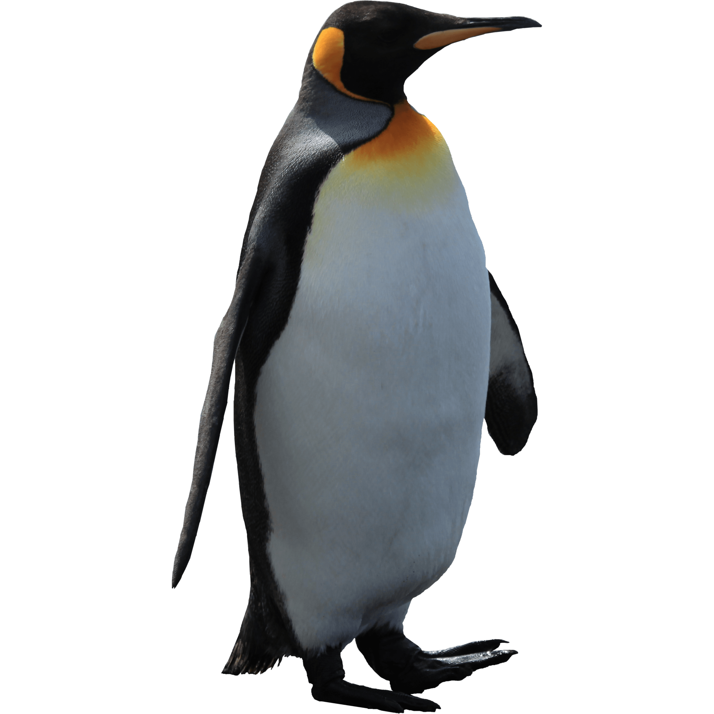

Espécie Imperial
Saber Mais
Pinguim Imperador
O majestoso pinguim-imperador é a maior de todas as espécies de pinguins, adaptado perfeitamente à vida na Antártida. Capazes de suportar temperaturas de -40°C, esses animais incríveis realizam uma das jornadas mais extraordinárias do reino animal para procriar.
Habitat
Antártida
Altura
Até 1,2 metros
Peso
Até 45 kg